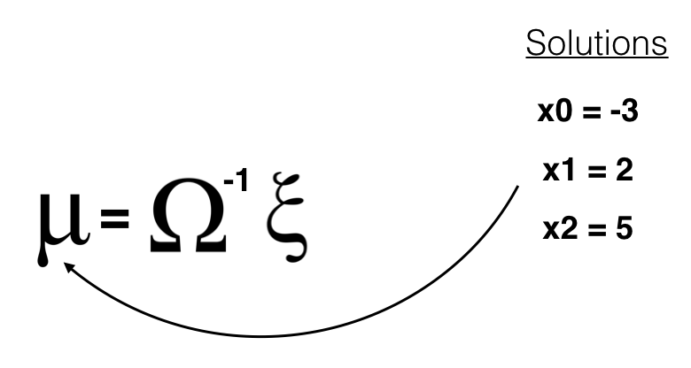

Landmark Detection & Robot Tracking (SLAM)
In this project, we’ll be localizing a robot in a 2D grid world. The basis for simultaneous localization and mapping (SLAM) is to gather information from a robot’s sensors and motions over time, and then use information about measurements and motion to re-construct a map of the world.
Simultaneous Localization and Mapping
SLAM gives us a way to both localize a robot and build up a map of its environment as a robot moves and senses in real-time. This is an active area of research in the fields of robotics and autonomous systems. Since this localization and map-building relies on the visual sensing of landmarks, this is also a computer vision problem.
To perform SLAM, we’ll collect a series of robot sensor measurements and motions, in that order, over a defined period of time. Then we’ll use only this data to re-construct the map of the world with the robot and landmark locations. Robot motion and sensors have some uncertainty associated with them. For example, imagine a car driving up hill and down hill; the speedometer reading will likely overestimate the speed of the car going up hill and underestimate the speed of the car going down hill because it cannot perfectly account for gravity. Similarly, we cannot perfectly predict the motion of a robot. A robot is likely to slightly overshoot or undershoot a target location.
First, we create a robot and move it around a 2D grid world and then, define a sense function for this robot that allows it to sense landmarks in a given world. It’s important that you understand how this robot moves, senses, and how it keeps track of different landmarks that it sees in a 2D grid world, so that you can work with it’s movement and sensor data.
This project is part of the Udacity Computer Vision Nanodegree and all code can be found in my Github. The __init__ in robot class takes in a number of parameters including a world size and some values that indicate the sensing and movement capabilities of the robot. Furthermore, using the visualization function, display_world, that will display a grid world in a plot and draw a red o at the location of our robot, r. The details of how this function works can be found in the helpers.py file in the home directory. In the following image, we define a small 10x10 square world, a measurement range that is half that of the world and small values for motion and measurement noise. These values will typically be about 10 times larger, but we want to demonstrate this behavior on a small scale.
Next, let’s create landmarks, which are measurable features in the map. You can think of landmarks as things like notable buildings, or something smaller such as a tree, rock, or other feature. The robot class has a function make_landmarks which randomly generates locations for the number of specified landmarks. We have to pass these locations as a third argument to the display_world function and the list of landmark locations is accessed similar to how we find the robot position r.landmarks. Each landmark is displayed as a purple x in the grid world, and we also print out the exact [x, y] locations of these landmarks at the end of this cell.
Once we have some landmarks to sense, we need to be able to tell our robot to try to sense how far they are away from it. It will be up t you to code the sense function in our robot class. The sense function uses only internal class parameters and returns a list of the the measured/sensed x and y distances to the landmarks it senses within the specified measurement_range.
def sense(self):
''' This function does not take in any parameters, instead it references internal variables
(such as self.landamrks) to measure the distance between the robot and any landmarks
that the robot can see (that are within its measurement range).
This function returns a list of landmark indices, and the measured distances (dx, dy)
between the robot's position and said landmarks.
This function should account for measurement_noise and measurement_range.
One item in the returned list should be in the form: [landmark_index, dx, dy].
'''
measurements = []
## Iterate through all of the landmarks in a world
for i, l in enumerate(self.landmarks):
## For each landmark
## 1. compute dx and dy, the distances between the robot and the landmark
## 2. account for measurement noise by *adding* a noise component to dx and dy
## 3. If either of the distances, dx or dy, fall outside of the internal var, measurement_range
## then we cannot record them; if they do fall in the range, then add them to the measurements list
## as list.append([index, dx, dy]), this format is important for data creation done later
land_x, land_y = l
dx = self.x - land_x + random.uniform(-1, 1)*self.measurement_noise
dy = self.y - land_y + random.uniform(-1, 1)*self.measurement_noise
print("dx: {}\n dy: {}\n range: {}".format(dx, dy, measurement_range))
if (dx or dy) > self.measurement_range:
pass
else:
measurements.append([i, dx, dy])
return measurements
Omega and Xi
To implement Graph SLAM, a matrix and a vector (omega and xi, respectively) are introduced. The matrix is square and labeled with all the robot poses (xi) and all the landmarks (Li). Every time you make an observation, for example, as you move between two poses by some distance dx and can relate those two positions, you can represent this as a numerical relationship in these matrices.
It’s easiest to see how these work in an example. Below you can see a matrix representation of omega and a vector representation of xi.

Next, let’s look at a simple example that relates 3 poses to one another.
- When you start out in the world most of these values are zeros or contain only values from the initial robot position
- In this example, you have been given constraints, which relate these poses to one another
- Constraints translate into matrix values

If you have ever solved linear systems of equations before, this may look familiar.
Solving for x
To “solve” for all these x values, we can use linear algebra; all the values of x are in the vector mu which can be calculated as a product of the inverse of omega times xi.

Motion Constraints and Landmarks
Now, let’s look at how motion (and similarly, sensor measurements) can be used to create constraints and fill up the constraint matrices, omega and xi. Let’s start with empty/zero matrices.

This example also includes relationships between poses and landmarks. Say we move from x0 to x1 with a displacement dx of 5. Then we have created a motion constraint that relates x0 to x1, and we can start to fill up these matrices.

In fact, the one constraint equation can be written in two ways. So, the motion constraint that relates x0 and x1 by the motion of 5 has affected the matrix, adding values for all elements that correspond to x0 and x1.
Generating an environment
In a real SLAM problem, one may be given a map that contains information about landmark locations, and in this project, we will make our own data using the make_data function, which generates a world grid with landmarks in it and then generates data by placing a robot in that world and moving and sensing over some number of time steps. The data is collected as an instantiated robot moves and senses in a world. The SLAM function will take in this data as input. So, first we create this data and explore how it represents the movement and sensor measurements that our robot takes.
Create the world
We used the make_data function to generate a world of a specified size with randomly generated landmark locations. data holds the sensors measurements and motion of your robot over time. It stores the measurements as data[i][0] and the motion as data[i][1]. One of the most challenging tasks were to create and modify the constraint matrix and vector: omega and xi. In the images above, you saw an example of how omega and xi could hold all the values the define the relationships between robot poses xi and landmark positions Li in a 1D world.
In this project, we implemented constraints for a 2D world. We are referring to robot poses as Px, Py and landmark positions as Lx, Ly, and one way to approach this challenge is to add both x and y locations in the constraint matrices.

SLAM inputs
In addition to data, the slam function will also take in:
- N - The number of time steps that a robot will be moving and sensing
- num_landmarks - The number of landmarks in the world
- world_size - The size (w/h) of the world
- motion_noise - The noise associated with motion; the update confidence for motion should be
1.0/motion_noise - measurement_noise - The noise associated with measurement/sensing; the update weight for measurement should be
1.0/measurement_noise
Recall that omega holds the relative “strengths” or weights for each position variable, and you can update these weights by accessing the correct index in omega omega[row][col] and adding/subtracting 1.0/noise where noise is measurement or motion noise. Xi holds actual position values, and so to update xi you’ll do a similar addition process only using the actual value of a motion or measurement. So for a vector index xi[row][0] you will end up adding/subtracting one measurement or motion divided by their respective noise.
Implement Graph SLAM
With a 2D omega and xi structure as shown above, we have to be mindful about how you update the values in these constraint matrices to account for motion and measurement constraints in the x and y directions. Recall that the solution to these matrices (which holds all values for robot poses P and landmark locations L) is the vector, mu, which can be computed at the end of the construction of omega and xi as the inverse of omega times xi.
## slam takes in 6 arguments and returns mu,
## mu is the entire path traversed by a robot (all x,y poses) *and* all landmarks locations
def slam(data, N, num_landmarks, world_size, motion_noise, measurement_noise):
## Use initilization to create constraint matrices, omega and xi
omega, xi = initialize_constraints(N, num_landmarks, world_size)
# Which index starts the Landmarks?
first_landm_at = N*2
confidence = 1
## Iterate through each time step in the data
## get all the motion and measurement data as it iterates
for step, d in enumerate(data):
measurements, motion = d
step = step*2
## update the constraint matrix/vector to account for all *measurements*
## this should be a series of additions that take into account the measurement noise
for meas in measurements:
idx_L = meas[0]
x_L = meas[1]
y_L = meas[2]
### MAIN DIAGONAL
# X and Y
omega[step, step] += 1 *confidence/measurement_noise
omega[step +1, step +1] += 1 *confidence/measurement_noise
# Lx and Ly
omega[(N + idx_L)*2, (N + idx_L)*2] += 1 *confidence/measurement_noise
omega[(N + idx_L)*2 +1, (N + idx_L)*2 +1] += 1 *confidence/measurement_noise
### OTHER DIAGONAL
# Lx and X
omega[step, N*2 + idx_L*2] += -1 *confidence/measurement_noise
omega[(N + idx_L)*2, step] += -1 *confidence/measurement_noise
# Ly and Y
omega[step + 1, (N + idx_L)*2 + 1] += -1 *confidence/measurement_noise
omega[(N + idx_L)*2 + 1, step + 1] += -1 *confidence/measurement_noise
# Xi for X and Y
xi[step] += -1 * x_L/measurement_noise
xi[step + 1] += -1 * y_L/measurement_noise
# Xi for Lx and Ly
xi[(N + idx_L)*2 ] += 1 * x_L/measurement_noise
xi[(N + idx_L)*2 + 1] += 1 * y_L/measurement_noise
## update the constraint matrix/vector to account for all *motion* and motion noise
dx, dy = motion
#X_current
omega[step][step] += 1 * confidence/motion_noise
omega[step + 2][step + 2] += 1 * confidence/motion_noise
# X_next
omega[step][step + 2] += -1 * confidence/motion_noise
omega[step + 2][step] += -1 * confidence/motion_noise
# Y_current
omega[step + 1][step + 1] += 1 * confidence/motion_noise
omega[step + 3][step + 3] += 1 * confidence/motion_noise
#Y_next
omega[step + 1][step + 3] += -1 * confidence/motion_noise
omega[step + 3][step + 1] += -1 * confidence/motion_noise
xi[step, 0] += -1 * dx/motion_noise
xi[step+1, 0] += -1 * dy/motion_noise
xi[step+2, 0] += 1 * dx/motion_noise
xi[step+3, 0] += 1 * dy/motion_noise
## After iterating through all the data
## Compute the best estimate of poses and landmark positions
## using the formula, omega_inverse * Xi
omega_inverse = np.linalg.inv(omega)
mu = np.dot(omega_inverse, xi)
return mu, omega, xi
Run SLAM
Once we completed the implementation of slam, lets check what mu it returns for different world sizes and different landmarks! We expect the robot to start with an estimated pose in the very center of your square world, whose size is defined by world_size. We specify the number, N, the time steps that the robot was expected to move and the num_landmarks in the world (which your implementation of slam) should see and estimate a position for.
With these values in mind, you should expect to see a result that displays two lists:
- Estimated poses, a list of (x, y) pairs that is exactly
Nin length since this is how many motions your robot has taken. The very first pose should be the center of your world, i.e.[50.000, 50.000]for a world that is 100.0 in square size. - Estimated landmarks, a list of landmark positions (x, y) that is exactly
num_landmarksin length.
For visualizing the constructed world, using the display_world code from the helpers.py file (which was also used in the first notebook), we can actually visualize what you have coded with slam: the final position of the robot and the positon of landmarks, created from only motion and measurement data!
To confirm that the slam code works, we run it on some test data and cases. The output should be close-to or exactly identical to the given results. If there are minor discrepancies it could be a matter of floating point accuracy or in the calculation of the inverse matrix.
Would you like to receive the most important news and trends in AI in just one email every end of the month? Subscribe below and I’ll send you the 10 most important news in Artificial Intelligence
Subscribe to Edge AI Guru
Get the latest posts delivered right to your inbox